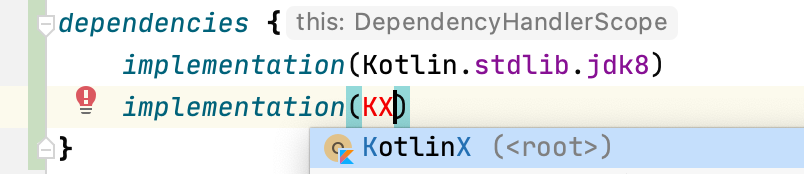
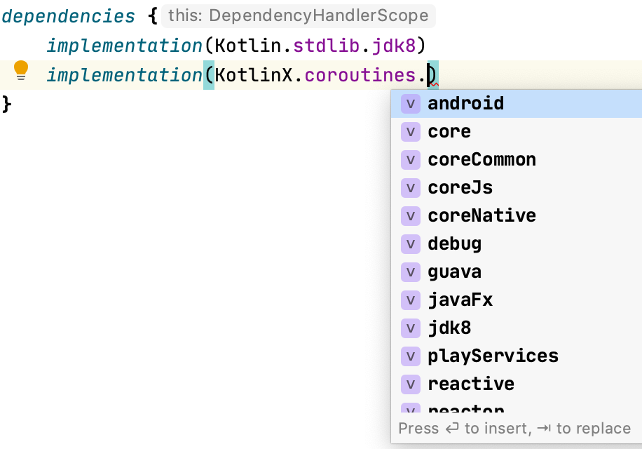

Adding Dependencies
Adding dependencies¶
Built-in dependencies constants¶

refreshVersions provides read-to-use organized constants for select popular dependencies of the following ecosystems:
- Kotlin Multiplatform
- Kotlin/JVM
- Android
That doesn’t prevent you from using refreshVersions in a Gradle project that is not using Kotlin or is not an Android project.
You can use them in any build.gradle or build.gradle.kts file.
Here’s an example of how it looks like in the IDE:
No imports needed.

Autocomplete in IDE for easy discoverability.

You can see all the dependency objects in this directory.
Wait, what version are those dependencies using?¶
All these dependency constants specify their version as the version
placeholder (_), so refreshVersions can replace it seamlessly with the
value defined in the versions.properties file.
After adding a dependency that doesn’t have its version specified in the
versions.properties file yet, refreshVersions will edit it and put the
most stable recent version in it on the next Gradle sync (or any other
Gradle run).
It will also put any less stable versions as comments, allowing you to quickly upgrade if needed.
Adding Gradle plugins¶
This section doesn’t apply to plugins that are configured in a
buildscript block (since these have their versions configured like
regular dependencies), but only to those that are configured solely with
a plugin id.
To add such a plugin, do as usual, but do not specify the version in the
build.gradle or build.gradle.kts file. Instead, set it up like so in
the versions.properties file:
# versions.properties
plugin.com.apollographql.apollo=2.4.1
plugin.com.squareup.sqldelight=1.4.3
Then you can omit the plugin version in all build.gradle(.kts) of your project
// SOME_MODULE/build.gradle.kts
plugins {
id("com.squareup.sqldelight")
id("com.apollographql.apollo")
}
// SOME_MODULE/build.gradle
plugins {
id 'com.squareup.sqldelight'
id 'com.apollographql.apollo'
}
As you see, the convention is pretty simple. The key plugin.some.plugin.id sets the version of the plugin `id(“some.plugin.id”)´.
Gradle buildSrcVersions¶
Yet another approach to managing dependencies is to use the Gradle buildSrc module, and to auto-magically generate a file Libs.kt that contains all the dependencies applied to your build:
/**
* Generated by `$ ./gradlew buildSrcVersions`
*/
object Libs {
const val annotation: String = "androidx.annotation:annotation:_"
const val guava: String = "com.google.guava:guava:_"
const val guice: String = "com.google.inject:guice:_"
}
Because this file used the placeholder version _, it is compatible with gradle refreshVersions!
This feature is not done yet, if you think we should prioritze it, please follow the issue https://github.com/jmfayard/refreshVersions/issues/235
Package Search from JetBrains¶
JetBrains proposes the plugin Package Search.
Package Search provides a nice UX to add a dependency

Can you use it with refreshVersions?
Sure, just use the version place holder _.
The libraries.gradle pattern¶
An older approach to centralize dependencies is to have a libraries.gradle file
// libraries.gradle
ext.libraries = [ // Groovy map literal
spring_core: "org.springframework:spring-core:3.1",
junit: "junit:junit:4.10"
]
// MODULE/libraries.gradle
apply(from = "../libraries.gradle")
dependencies {
compile libraries.spring_core
testCompile libraries.junit
}
Does that work with refreshVersions too? Yes, just use the version place holder _
ext.libraries = [ // Groovy map literal
- spring_core: "org.springframework:spring-core:3.1",
+ spring_core: "org.springframework:spring-core:_",
- junit: "junit:junit:4.10"
+ junit: "junit:junit:_"
]